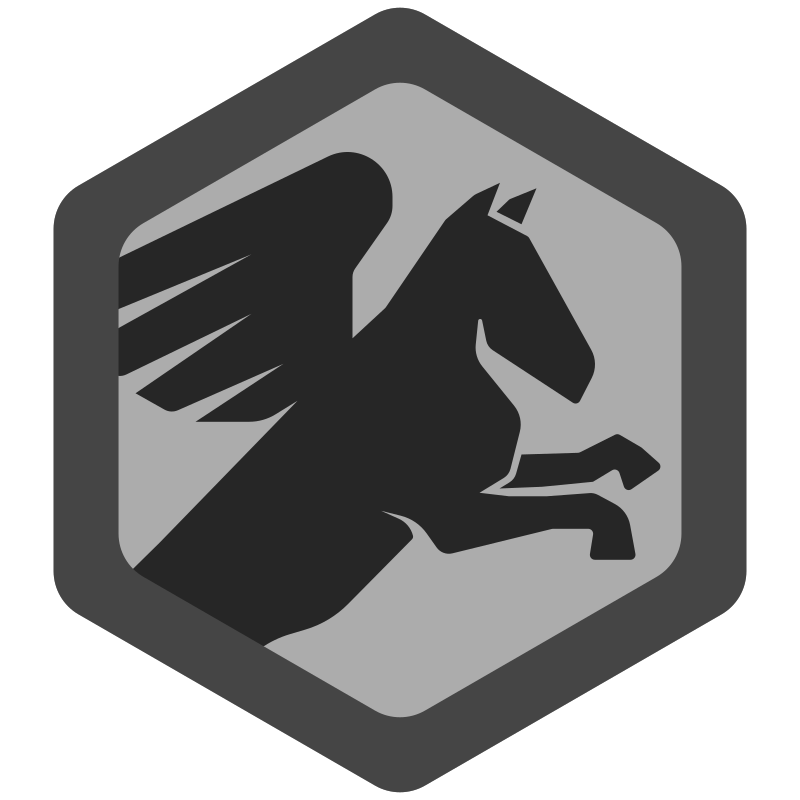
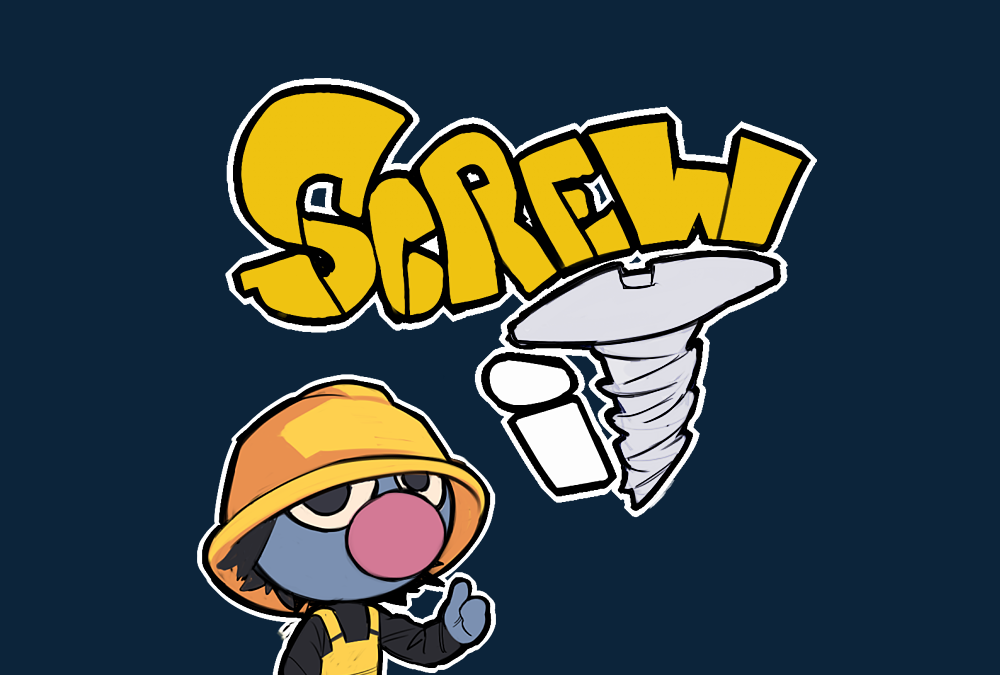
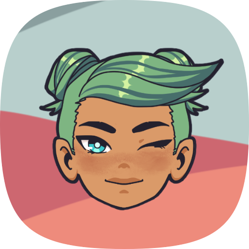
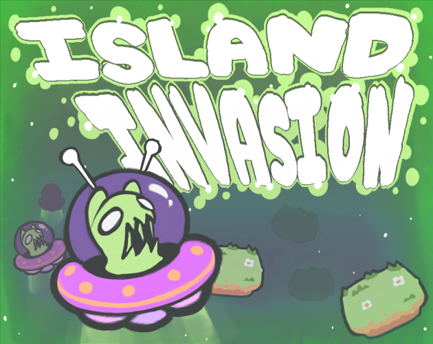
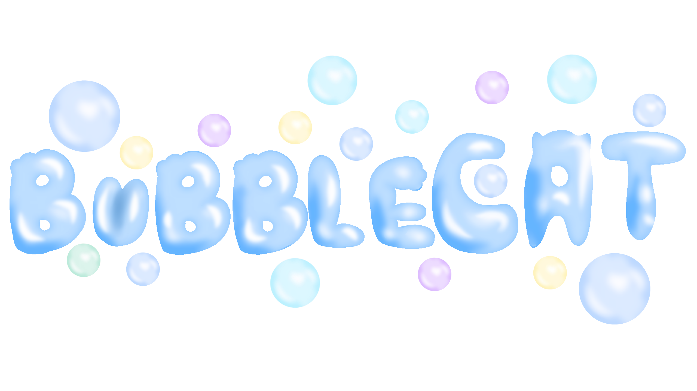

My projects

PegasusEngine
Custom 3D video game engine in C#. PegasusEngine is designed for experimenting with graphics and physics. Supports own rendering, object managment, collisions and scripting. Project helped me learn about game engine architecture and OpenGL.
- Used technologies: C#, OpenGL
- Roles: author, developer
- Years: 2024 - Dnes
More about project →

Screw It
Action video game, where your main objective is to "screw" all the screws in a time limit. The game combines fast reflexes, precision and cute animations. Screw It was a game jam project we made in 9 hours. The game is avaliable right in the browser and is suitable for quick gameplay.
- Used technologies: Unity, C#
- Role: developer
- Year: 2023
More about project →

bCrypto
bCrypto je Minecraft plugin, ktorý do hry prináša jednoduchý svet kryptomien. Hráči si môžu otvárať peňaženky, kupovať a predávať kryptomeny a sledovať ich aktuálnu hodnotu priamo na serveri. Plugin kombinuje ekonomiku, obchodovanie a zábavnú formu správy virtuálneho majetku. Pri vývoji som sa zameral na prehľadné príkazy, stabilitu a plynulú integráciu s existujúcou ekonomikou servera.
- Used technologies: Java, Paper MC
- Role: developer
- Years: 2025-2026
More about project →

Project - Enery
Enery je vzdelávacia dobrodružná hra zasadená do postapokalyptickej pustatiny, v ktorej hráč vedie komunitu detí snažiacich sa prežiť a obnoviť svet. Hra kombinuje prvky prieskumu a „point-and-click“ adventúry s riešením logických hádaniek, čím hráčov interaktívne učí o vede, technológiách a ekológii. Okrem virtuálnej zábavy projekt presahuje do reality odomykaním návodov na skutočné "urob si sám" projekty, ako je napríklad stavba solárnej kuchyne, čím podporuje environmentálnu zodpovednosť.
- Použité technológie: Unity, C#
- Rola: vývojár
- Rok: 2024

Alien Invasion
Strategická hra, kde bránite ostrov pred mimozemskou inváziou. Hráč musí takticky rozmiestniť obranu, reagovať na rôzne typy nepriateľov a efektívne využívať dostupné zdroje. Alien Invasion je zmes akcie, stratégie a rýchleho rozhodovania, pričom ponúka rôzne úrovne obtiažnosti. Hra je dostupná v prehliadači.
- Použité technológie: Unity, C#
- Rola: vývojár
- Rok: 2022
KPU (Karlík Processing Unit)
Emulátor procesora KSI24/25 v Pythone. KPU simuluje správanie reálneho CPU, vrátane spracovania inštrukcií, registrami a pamäťou. Projekt je určený na vzdelávacie účely a pomáha lepšie pochopiť princípy fungovania procesorov. Obsahuje aj vizualizáciu vykonávaných operácií.
- Použité technológie: Python
- Rola: autor, vývojár
- Rok: 2025
Krolog
Implementácia logického programovacieho jazyka Prolog v Pythone. Krolog umožňuje definovať logické pravidlá, fakty a vykonávať inferenciu nad nimi. Projekt je vhodný na experimentovanie s umelou inteligenciou, logickým programovaním a výučbu základov Prologu. Obsahuje jednoduché rozhranie na zadávanie dotazov.
- Použité technológie: Python
- Rola: autor, vývojár
- Rok: 2025

BubbleCat
Akčná plošinovka s mačkou Bublinkou. Skáčte, zbierajte bubliny a prekonávajte prekážky. Play in browser.
- Used technologies: Unity, C#
- Roles: lead, developer
- Year: 2025